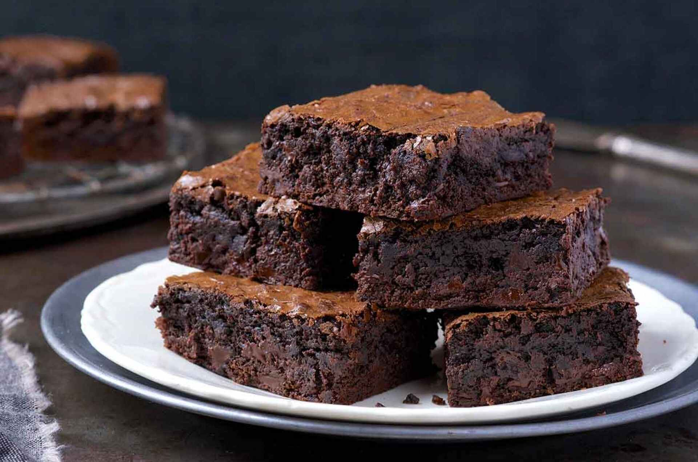

Whole Grain Brownies

Tasting is believing! These whole wheat brownies are the treat we serve when we're trying to convince folks that baking with whole grains doesn't have to be an exercise in deprivation! Moist, rich, and deeply, darkly chocolate, these brownies are the ones to go through life with.
Cooking time: 50min
Yields: 24 x 2" brownies
Source: King Arthur Baking
Ingredients
- 16 tablespoons (227g) unsalted butter, softened
- 2 cups (425g) light brown sugar, packed
- 3/4 cup (64g) Dutch-process cocoa
- 1 teaspoon salt
- 1 teaspoon baking powder
- 1 teaspoon espresso powder, optional but recommended
- 1 tablespoon Pure Vanilla Extract
- 4 large eggs
- 1 1/2 cups (170g) White Whole Wheat Flour
- 2 cups (340g) semisweet chocolate chips or bittersweet chocolate chips
Steps
- Preheat the oven to 350°F. Lightly grease a 9" x 13" pan; line the pan with parchment paper if desired.
- In a medium-sized microwave-safe bowl, or in a saucepan set over low heat, melt the butter, then add the sugar and stir to combine.
- Return the mixture to the heat (or microwave) briefly just till it's hot (about 110°F to 120°F) but not bubbling. Don't worry if it separates; just stir it briefly to recombine a bit. Heating this mixture a second time will dissolve more of the sugar, which will yield a shiny top crust on your brownies.
- Transfer the mixture to a bowl, and stir in the cocoa, salt, baking powder, espresso powder, and vanilla.
- Add the eggs, stirring till smooth.
- Then add the flour and chips, again stirring till smooth. Spoon the batter into the prepared pan.
- Bake the brownies for 30 minutes, until a cake tester or sharp knife poked into the center reveals wet crumbs, but not raw batter. The brownies should feel set on the edges and in the center. Remove them from the oven, and cool completely on a rack.